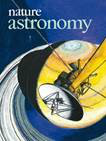

|
UNIVERSIDAD DE GUADALAJARA |
|
Acceso a títulos a prueba de la revista Nature. |
||
|---|---|---|
|
|
||
|

Nature astronomy |
Nature biomedical engineering |
Nature chemical biology |
|
Nature ecology & evolution |
Nature energy |
Nature geoscience |
|
Nature human behaviour |
Nature microbiology |
Nature plants |